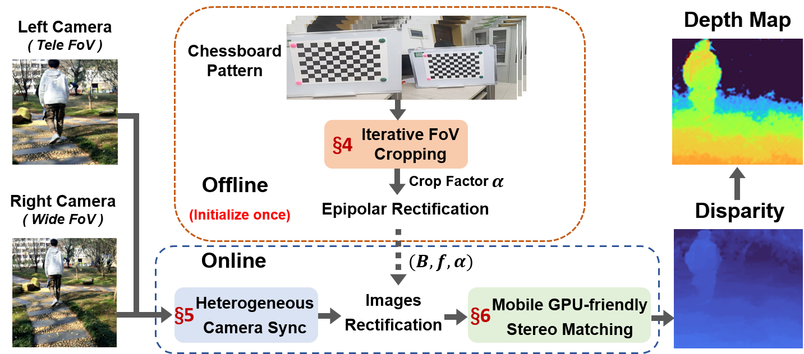
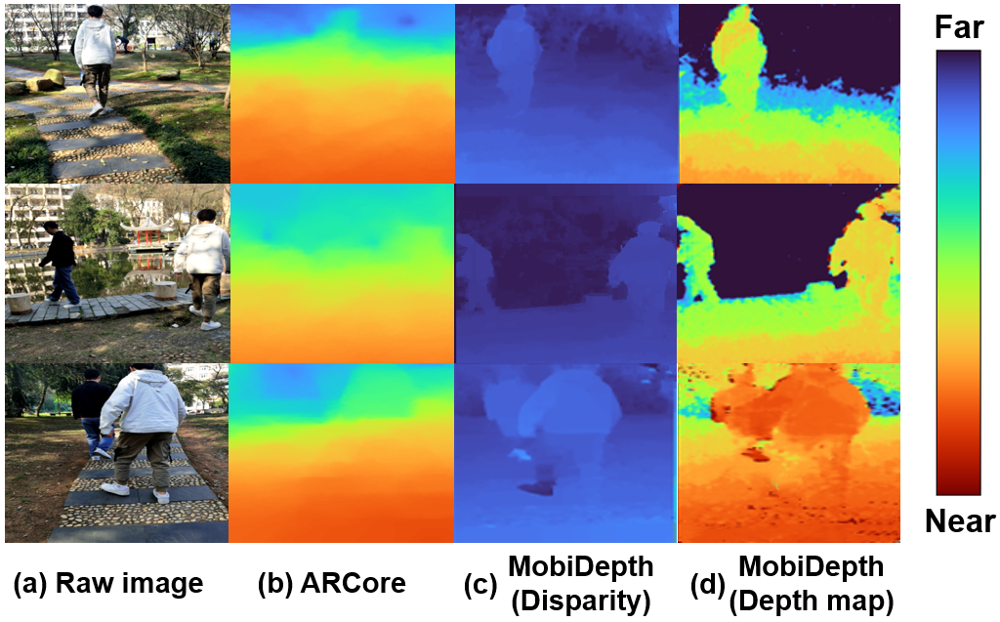

I am currently a Ph.D. student advised by Prof. Yaoxue Zhang and co-advised by Prof. Ju Ren and Prof. Deyu Zhang in Central South University(CSU). I received my B.S. degree from Central South University in 2016 and took a successive postgraduate and doctoral program in Central South University in 2018. I was a visiting scholar at HCS Lab, Seoul National University in 2022, working with Prof. Youngki Lee. I also joined HEX group at Microsoft Research Asia from Sept. 2019 to Mar. 2020 and Insitute for AI Industry Research(AIR), Tsinghua University from Aug. 2021 to Apr. 2022 as an intern, respectively, mentored by Prof. Yunxin Liu. I am a student member of the IEEE and a member of the ACM.
My research interests on mobile computing and edge computing, including AR/VR, intelligent edge/mobile systems, mobile sensing and applications of machine learning.

The system overview and workflow of MobiDepth.

Example results of ARCore depth maps
and the depth maps output by MobiDepth with the person moving.
The initial idea was came up in about 2021 when dining with some friends at Beijing. While binocular depth estimation is a mature technique, it is challenging to realize the technique on commodity mobile devices due to the different focal lengths and unsynchronized frame flows of the on-device dual cameras and the heavy stereo-matching algorithm. Even the ARCore and the ARKit are the most common solution adopted by existing mobile systems, they requrie the camera to be moving and expects the target object to be stationary, which significantly restricts its usage scenarios. To this end, we propose MobiDepth, a real-time depth estimation system using the widely-available on-device dual cameras. MobiDepth resolves all the issues of the three existing solutions, i.e., it does not rely on any dedicated sensors or pre-training, and works well for target objects in motion.
The system architecture and workflow of MVPose.
Example results of MVPose from live videos.
The initial verison of MobiPose was accepted by ACM SenSys 2020, which achieved over 20 frames per second pose estimation with 3 persons per frame, and significantly outperforms the state-of-the-art baseline(MobineNetV3-SSDLite+PoseNet), with a speedup of up to 4.5 and 2.8 in latency on CPU andGPU, respectively, and an improvement of 5.1% in pose-estimation model accuracy. The second version, MVPose took a motion-vector-based approach to fast and accurately track the human keypoints across consecutive frames, rather than running expensive human-detection model and pose-estimation model for every frame, which achieved over 30 frames per second pose estimation with 4 persons per frame.